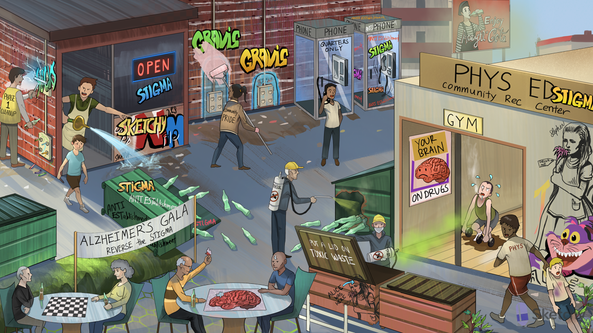

Indirect view of Acetyl-cola® mime: indirect cholinomimetics (inhibit acetylcholinesterase)
Dumpster of acetyl-cola bottles: acetylcholinesterase degrades acetylcholine (ACh)
Knocked over dumpster with acetyl-cola spilling out: acetylcholinesterase inhibitors increase synaptic concentrations of ACh
ANTI-ESTablishment: anti-cholinesterase, a.k.a. acetylcholinesterase inhibitor
STIGMA: “-stigmine” drug suffix of acetylcholinesterase inhibitors
Skeletal muscle brick wall: acetylcholinesterase inhibitors enhance effects of ACh at the NMJ (increase activity of NICOTINIC ACh receptors)
Electrical end plate: motor endplate (at the NMJ)
GRAVIS graffiti: myasthenia gravis (MG)→ antibodies against nicotinic ACh receptors at motor endplate (skeletal muscle NMJ)
Graffiti covering electrical end plates: MG causes progressive proximal weakness, ptosis, diplopia (inactivated nicotinic ACh receptors at motor endplate)
Community PRIDE: PYRIDOstigmine (acetylcholinesterase inhibitor used as long-term treatment for MG)
Removing graffiti on end plates: acetylcholinesterase inhibitors increase ACh at NMJ endplate to outcompete MG antibodies
Neon sign STIGMA: neostigmine (acetylcholinesterase inhibitor used as treatment for MG)
Phone booth: edrophonium (acetylcholinesterase inhibitor that transiently reverses symptoms of MG)
Quarters only: pyridostigmine, neostigmine and edrophonium are quaternary amines and do not penetrate the CNS
Phone in working order: edrophonium REVERSES muscle weakness in undertreated MG patients (POSITIVE tensilon test)
Phone wire tension: tensilon test → edrophonium reverses (positive) or fails to reverse (negative) muscle weakness
Phone out of order, with anti-esterase graffiti: edrophonium FAILS to reverse muscle weakness during cholinergic crisis (NEGATIVE tensilon test)
CURARE crayons stuck in end plate: nondepolarizing neuromuscular blocking agents (e.g. tubocurarine, pancuronium, cisatracurium) inhibit nicotinic ACh receptors at NMJ endplate
Neon sign store owner kicking out CURARE crayon kid: acetylcholinesterase inhibitors (e.g neostigmine) reverse nondepolarizing neuromuscular blockade
SUCKS: succinylcholine is a depolarizing neuromuscular blocking agent (nicotinic ACh receptor AGONIST)
PHASE-1 cleanup crew getting shocked: initial PHASE-1 of depolarizing blockade is IRREVERSIBLE (acetylcholinesterase inhibitors potentiate blockade)
Bladder hose: acetylcholinesterase inhibitors can be used to treat urinary retention (muscarinic activation)
PHYS ED center: PHYSostigmine (acetylcholinesterase inhibitor with CENTRAL effects)
Atropine in Wonderland: atropine overdose → “mad as a hatter, hot as a hare, blind as a bat” (reversed by physostigmine)
Deadly nightshade: belladonna flower is a naturally occurring form of atropine (overdose reversed by physostigmine)
GYM weeds: Jimson weed is a naturally occurring form of atropine (overdose reversed by physostigmine)
PHYS ED teacher reprimanding atropine “artist”: physostigmine reverses atropine overdose (peripheral and CENTRAL effects)
“Your brain on drugs”: physostigmine (and organophosphates) enters CNS to cause central cholinergic effects
DUMBBELS: acetylcholinesterase inhibitor toxicity (Diarrhea, Urination, Miosis, Bronchospasm Bradycardia, Lacrimation, Salivation)
Weak nicotine kid: acetylcholinesterase inhibitor toxicity includes flaccid paralysis (NMJ nicotinic ACh receptor over-activation)
THIOL spray: insecticides (parathion, malathion, echothiophate) are organophosphates, a type of acetylcholinesterase inhibitor (also includes nerve agents and herbicides)
Green fumes: organophosphates are a major cause of acute cholinergic toxicity (DUMBBELS)
Closing LID on TOXIC spray: praLIDoxime reverses organophosphate toxicity (DUMBBELS)
New toxic waste dumpsters: pralidoxime regenerates acetylcholinesterase at muscarinic and NICOTINIC receptors (reverses cholinergic toxicity INCLUDING FLACCID PARALYSIS)
Atropine Alice is in your head: atropine reverses both peripheral and CENTRAL muscarinic toxicity from organophosphate poisoning (pralidoxime is peripheral only)
Old pest-control man: “aging” of the organophosphate-cholinesterase complex leads to irreversible binding
Corroded dumpster: pralidoxime is ineffective once aging of organophosphate- cholinesterase complex has occurred
Alzheimer’s GALA: galantamine (acetylcholinesterase inhibitor used to treat Alzheimer’s disease)
REVERSE the STIGMA: rivastigmine (acetylcholinesterase inhibitor used to treat Alzheimer’s disease)
Done with brain puzzle: donepezil (acetylcholinesterase inhibitor used to treat Alzheimer’s disease)
Brain puzzle: galantamine, rivastigmine, and donepezil penetrate the CNS